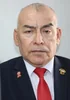
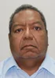

| ENUMERADOR | NOMBRE | PARTIDO | FOTO | HOJA DE VIDA |
|---|---|---|---|---|
| 1 | EDGAR ALVARADO SALAMANCA | PRIMERO LA GENTE | Abogado con experiencia en diplomacia y trayectoria en Cancillería. | |
| 2 | JORGE LOZADA PAZ | PARTIDO APRISTA PERUANO | Experiencia municipal como regidor y gestión agrícola. | |
| 3 | CARLOS AQUIÑO GOMERO | PARTIDO DEL BUEN GOBIERNO | Ingeniero con experiencia gerencial en sector público y privado. | |
| 4 | LUIS GALARRETA VELARDE | FUERZA POPULAR | Ex congresista con amplia trayectoria política y liderazgo partidario. | |
| 5 | DANIELLA MEZA FERNANDEZ | PARTIDO MORADO | Profesional en negocios internacionales con experiencia privada. | |
| 6 | TALIA DE TOMAS BULLON | PERU MODERNO | Docente con experiencia en gestión educativa y pública. | |
| 7 | JAVIER GALLARDO MENDOZA | PROGRESEMOS | Ex comandante de la PNP con experiencia en gestión pública. | |
| 8 | RUBEN RAMIREZ MATEO | PERU LIBRE | Abogado y ex ministro del Ambiente. | |
| 9 | LUIS CABALLERO SABINO | UNIDAD NACIONAL | Abogado con experiencia municipal y gestión pública. | |
| 10 | EDGARDO NAVARRO LEYVA | PARTIDO PATRIOTICO DEL PERU | Profesional con experiencia administrativa en sector público. | |
| 11 | YESSICA AMURUZ DULANTO | AVANZA PAIS | Congresista con formación jurídica y experiencia legislativa. | |
| 12 | JULIAN PALACIN GUTIERREZ | PERU LIBRE | Abogado con experiencia en INDECOPI y gestión pública. | |
| 13 | ROSARIO MORI ISUISA | JUNTOS POR EL PERU | Administradora con experiencia en el sector público. | |
| 14 | EDWIN HIDALGO SERNA | FUERZA Y LIBERTAD | Economista con experiencia municipal. | |
| 15 | DICK JAIMES BLANCO | PROGRESEMOS | Ingeniero civil con experiencia privada. | |
| 16 | JOSE ARRIOLA TUEROS | PODEMOS PERU |  | Congresista con trayectoria pública prolongada. |
| 17 | JORGE GONZALES ORE | ALIANZA PARA EL PROGRESO | Abogado con experiencia como asesor en el Congreso. | |
| 18 | ROSSANA URRUTIA OLIVARI | PRIMERO LA GENTE | Administradora con experiencia en gestión portuaria. | |
| 19 | ANABEL ROZAS FARFAN | PERU PRIMERO | Profesional en salud con experiencia regional. | |
| 20 | JESSICA URQUIZA ALVAREZ | RENOVACION POPULAR | Ex regidora con experiencia política local. | |
| 21 | MARIA CASTILLO HUAMAN | FUERZA Y LIBERTAD | Enfermera con experiencia en salud pública. | |
| 22 | GLORIA MARTELL DIAZ | PARTIDO APRISTA PERUANO | Abogada con experiencia en Fiscalía y sector justicia. | |
| 23 | KHELY SANTIAGO RIVERA | ALIANZA PARA EL PROGRESO | Administradora con experiencia en el Congreso. | |
| 24 | CLAUDIA FUENTES LOZANO | ALIANZA PARA EL PROGRESO | Abogada con experiencia técnica en el Estado. | |
| 25 | YURFRE BARBOZA ORE | AHORA NACION - AN | Docente con experiencia en educación. | |
| 26 | LIONEL BARDALES DEL AGUILA | AHORA NACION - AN | Abogado y docente universitario. | |
| 27 | GUIDO BRAVO MONTEVERDE | PRIMERO LA GENTE | Administrador con experiencia en empresa privada. | |
| 28 | GULLIVER BUCHELLI PERALES | UNIDAD NACIONAL | Profesional con experiencia en PetroPerú. | |
| 29 | ARIANA RUIZ HERRERA | FUERZA POPULAR | Abogada con experiencia en el Congreso. | |
| 30 | PEDRO CASANOVA SAAVEDRA | FUERZA POPULAR |  | Contador con experiencia como regidor y asesor legislativo. |